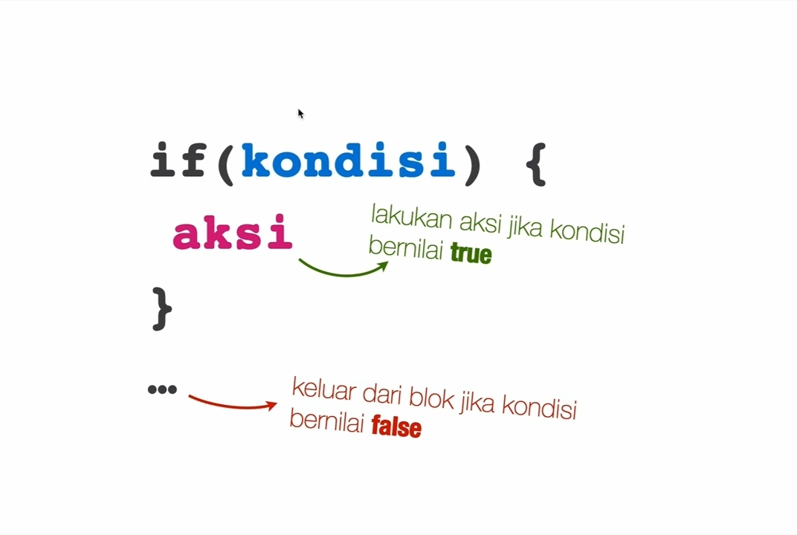
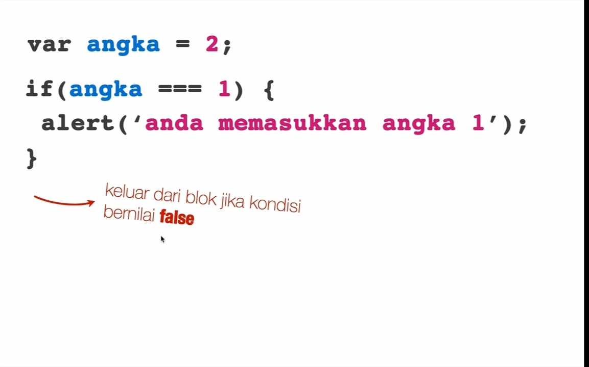
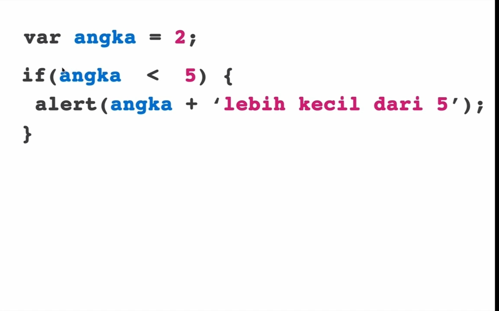
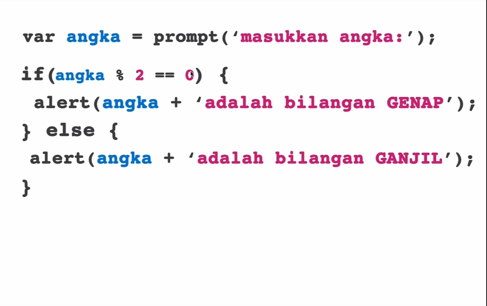
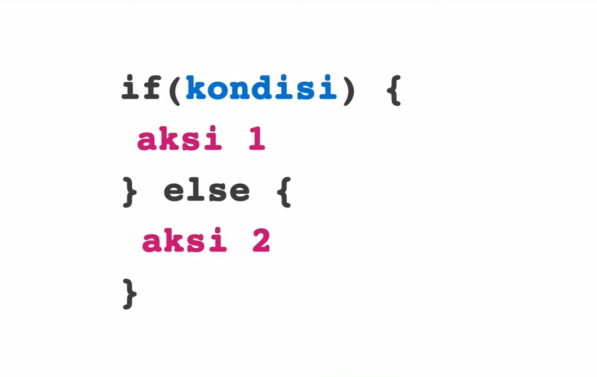
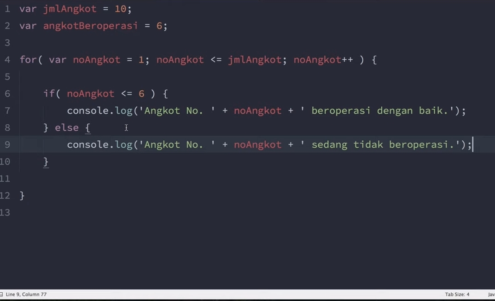
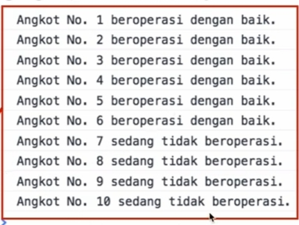
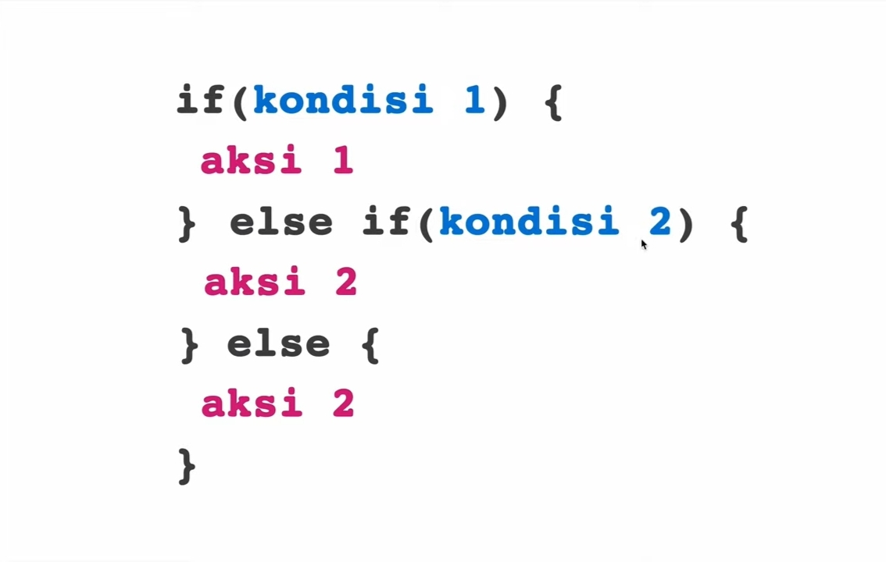
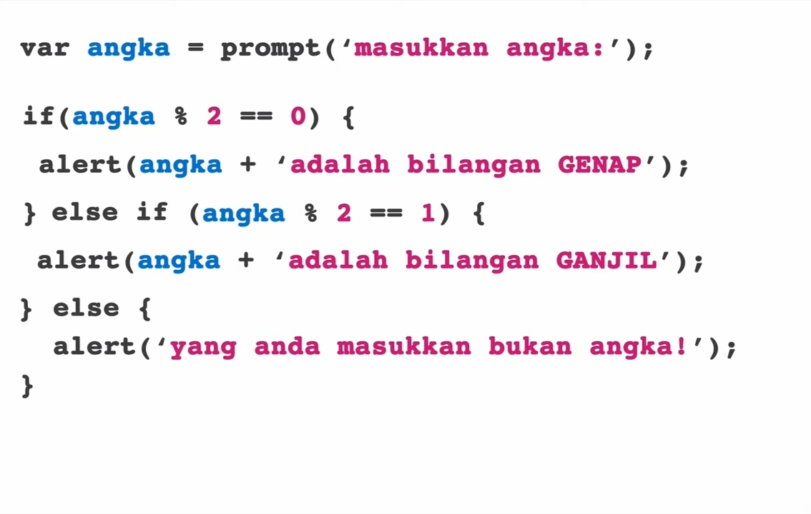

ada banyak operator pada javascript
| operator |
|---|
| aretmatika |
| penugasan |
| perbandingan |
| logika |
| string |
| kondisional |
| type of |
operator pada java script adalah sebuah simbol yang digunakan untuk melakukan operasi
ada banyak operator pada javascript
| operator |
|---|
| aretmatika |
| penugasan |
| perbandingan |
| logika |
| string |
| kondisional |
| type of |
operator-operator ini kita akan bagi menurut jumblah operannya
| binary | ||
|---|---|---|
| aretmatika | ||
| penugasan | ||
| perbandingan | ||
| logika | ||
| string |
| ternary |
|---|
| kondisional |
| unary |
|---|
| typeof |
binary adalah operator yang membutuhkan dua operand
contoh :
operand
operator
operand
| aretmatika | keterangan |
|---|---|
| + | tambah |
| - | kurang |
| * | kali |
| / | bagi |
| % | modulus/sisa bagi |
catatan : hati-hati jika melakukan beberapa operasi matematik secara bersamaan karna sama seperti matematika pada umumnya. dimana ada operator yang akan dikerjakan terlebih dahulu urutannya seperti ini (), *, /, +, -
| operator | keterangan |
|---|---|
| = | sama dengan |
| += | tambah samadengan |
| -= | kurang samadengan |
| *= | kali samadengan |
| /= | bagi samadengan |
| %= | modulus samadengan |
catatan : yang paling sring kita gunakan adalah tanada (=) ketika membuat variable
contoh :
variabel x = 10
| contoh | hasil |
|---|---|
| x += 5 | 15 |
| x -= 5 | 5 |
| *= | 50 |
| /= | 2 |
| %= | 0 |
perbandingan digunakan untu membandingkan dua buah operand. ada banyak operatror perbandingan
| op | keterangan | contoh |
|---|---|---|
| == | sama dengan | 10 == 10 true|10 == 5 false |
| != | tidak samadengan | 10 != 5 true|10 != 10 false |
| === | strict sama dengan | membandingkan nilai dan juga tipenya |
| !== | strict tidak sama dengan | membandingkan nilai dan juga tipenya |
| > | lebih besar dari | 10 > 5 true|5 > 10 false |
| > | lebih kecil dari | 5 < 10 true|10 < 5 false |
| >= | lebih besar smadengan | |
| <= | lebih kecil smadengan |
operator perbandingan ini menghasilkan nilai bolean true dan false
operator ini digunakan untuk menentukan logika dari beberapa ekspresi yang nnti kita gabungkan
| logika | keterangan |
|---|---|
| && | AND |
| || | OR |
| ! | NOT |
contoh :
variable x = 10
| contoh | c-keterangan |
|---|---|
| (x % 2 == 0) true && (x < 5) false | jika menggunakan && semua kondisi operand harus true |
| (x % 2 == 0) true || (x < 5) false | jika menggunakan || slah satu kondisi operand benar maka hasilnya true |
| !(x < 20) false | ini untuk membalikkan keadaan |
operator ini adalah penggabung string atau tulisan dengan operator +
ternary adalah operator yang membutuhkan tiga operand
operator ini digunakan untuk melakukan pengecekan pada sebuah kondisi dan menentukan nilai yang dihasilkan ketika kondisinya bernilai true atau false
cara penulisan (kondisi)? true : false
contoh :
(x % 2 == 0) ? jika " jika benar tujukkan ini "
jika " jika salah tunjukkan ini "
unary hanya membutuhkan satu operand saja
operand
operator
atau sebaliknya
operator
operand
operator typeof digunakan untuk mengetahui tipe data apa yang dimasukkan kedalamnya
contoh :
| type data | hasil |
|---|---|
| typeof(10) | number |
| typeof("10") | "string" |
| typeof(true) | boleans |
untuk menuliskan string pada javascript yang perlu dilakukan hanya membungkus data/nilai menggunakan tanda (" ")atau (' ')
catatan : hati-hati menggunakan tanda kutip (jika ad kerakter di dalmnya terdapat kitip satu maka bungus data menggunakan kuitp dua begitupun sebaliknya)
contoh :
kutip dua = "hari ini adalah hari jum'at"
kutip satu = ' kegiatan "gerakan pungut sampah" hari senin'
jika suatu nilai di dalmnya terdapat dua kerakter kuip seperti di bawah ini
" hari ini adalah hari jum'at bsek kegiatan "gerakan pungut sampah" " . agar tidak eror kita dapat menambahkan
(
\ ) pada nilai yang ingin dimunculkan
contoh = " hari ini adalah hari jum'at bsek kegiatan \"gerakan pungut sampah\" "
ini dinamakan escape/character untuk memunculkan kutip
| scape character | hasil |
|---|---|
| /0 | kerakter NULL |
| /' | ' |
| /" | " |
| // | / |
| /n | new line/baris baru |
| /t | tab |
| /b | backspace |
| /uxxxx | unicode/simbol |
kita juga dapat membandingkan string dengan menggunakan operator == atau === ( dia akan mengecek dua buah sting itu sama atu tidak)
contoh :
"Muhammad Akbar" == "muhammad akbar"
hati-hati jika menggunakan ini karna akan membandingkan huruf besar dan kecil meskipun tulisannya sama
yang terakhir di dalam sting ada sebuah fungsi yang dapat kita gunakan untuk menghitung panjang dari sebuah
string ( .lenght)
contoh :
"muhammad akbar".length //16
contoh :
const a = 10:
const a = 100.10:
konversi digunakan untuk mengubah data yang awalnya string menjadi number atau sebaliknya
| function | keterangan |
|---|---|
| parseInt(string) | mengkonversi dari string ke number (bilangan bulat) |
| parseFloat(string) | mengkonversi dari string ke number (bilangan pecahan) |
| number(string) | mengkonversi dari string ke number (bilangan bulat) atau pecahan |
| number.toString() | konversi dari number ke string |
const a =parseInt ("1");
const b = 1;
const hasil = a + b; // =2
| contoh | hasil | keterangan |
|---|---|---|
| parseInt("1.1") | 1 | parseInt ini bilangan pecahannya akan diabaikan |
| parseFloat("1.1") | 1.1 | parseFloat ini akan tetap menerima nilai pecahan |
| number("1.1") | 1.1 | number ini bisa fleksibel jika nilainya int maka hasilnya int dan jika nilainya float maka hasilnya juga foat |
| a.toString() + b.toString() | 11 | ini akan menggabungkan string bukan menjumlahkan walaupu nilainya angka |
didalam number itu ada sebuah number yunik namanya adalahh NaN. ini diguakan ketika ada kejadian mengkonversi data tidak valid seperti memasukkan huruf
const a =parseInt ("akbar");
const b = 1;
const hasil = a + b; // = NaN
| contoh | hasil | keterangan |
|---|---|---|
| parseInt("1.1akbar") | 1 | jika parseInt di belakannya bukan angka, maka akan diabaikan. tetapi jika didepan bukan angka maka hasilnya akan NaN |
| parseFloat("1.1akbar") | 1.1 | jiika parseFloat di belakannya bukan angka maka, akan diabaikan. tetapi jika didepan bukan angka maka hasilnya akan NaN |
| number("1.1akbar") | NaN | jika number hasilnya akan tetap menjadi NaN jika ad nilai bukan angka (tidak mentoleransi) |
| a.toString() + b.toString() | 11 | ini akan menggabungkan string bukan menjumlahkan walaupu nilainya angka |
isNaN ini digunakan untuk menegecek apakah sebuah namber itu NaN atau bukan
const a = number(akbar);
const b = 100;
const hasil = isNaN(a) // terue
const hasil = isNaN(b) // false
popup box / dialog box adalah sebuah window kecil pada browser kita yang dapat kita munculkan sebagai alat interaksi yang digunakan agar user dapat berdialog dengan halaman web
| jenis popup box | cara penggunaan | keterangan |
|---|---|---|
| alert | alert('hello world') | hanya memberikan tombol ok |
| prompt | prompt('masukkan nama:') | sama memunculkan widows kecil tetapi user dapat mengimputkan sesuatu |
| confirm | confirm('kamu yakin?') | ini digunakan untukmeminta konfirmasi ya atau tidak dari user (memberikan nilai true atau false) |
didalam pemprograman pengulangan digunakan untuk mengulang sebuah perintah, pengulanga terdapat tiga sintaks yaitu while, for, do while
cara penulisan :
while (kondisi) {
aksi
}
contoh : dihentikan oleh user
var ulang = true;
while (
console.log(' hello world ');
ulang = confirm(' lagi?
');
}
contoh : dihentikan oleh program
var nilaiAwal = 1 ;
while ( nilaiAwal
<= 5 ) {
console.log (' hello world ');
nilaiAwal++ ;
}
jika ingin menulisaka hello world 1x - hello world 10x kita tambahkan variable
nilaiAwal
var nilaiAwal = 1 ;
while ( nilaiAwal
<= 5 ) {
console.log (' hello world' + nilaiAwal );
nilaiAwal++ ;
}
var nilaiAwal = 1 ;
while ( nilaiAwal
<= 10 ) {
console.log (' Angkot No.' + nilaiAwal + ' beroprasi dengan
baik. ' );
nilaiAwal++ ;
}
| hasil |
|---|
| Angkot No. 1 beroprasi denganbaik |
| Angkot No. 2 beroprasi denganbaik |
| Angkot No. 3 beroprasi denganbaik |
| Angkot No. 4 beroprasi denganbaik |
| Angkot No. 5 beroprasi denganbaik |
| Angkot No. 6 beroprasi denganbaik |
| Angkot No. 7 beroprasi denganbaik |
| Angkot No. 8 beroprasi denganbaik |
| Angkot No. 9 beroprasi denganbaik |
| Angkot No. 10 beroprasi denganbaik |
contoh 1 :
for (var nilaiawal = 1; nilaiAwal
<= 10; nilaiAwal++ ) {
console.log(' hello world ' + nilaiAwal + ' x ' );
}
var jmlAngkot = 10;
var angkotBeroprasi = 6;
var noAngkot = 1;
while( noAngkot
<= angkotBeroprasi ) {
console.log( ' Angkot No.'+noAngkot+'beroprasi dengan
baik ');
noAngkot++;
}
for( noAngkot = angkotBeroprasi+ 1; noAngkot
<= jmlAngkot;
noAngkot++) {
console.log( ' Angkot No.'+noAngkot+'tidak beroprasi
dengan
baik ');
}
| hasil |
|---|
| Angkot No. 1 beroprasi denganbaik |
| Angkot No. 2 beroprasi denganbaik |
| Angkot No. 3 beroprasi denganbaik |
| Angkot No. 4 beroprasi denganbaik |
| Angkot No. 5 beroprasi denganbaik |
| Angkot No. 6 beroprasi denganbaik |
| Angkot No. 7 tidak beroprasi denganbaik |
| Angkot No. 8 tidak beroprasi denganbaik |
| Angkot No. 9 tidak beroprasi denganbaik |
| Angkot No. 10 tidak beroprasi denganbaik |
sintaks penggunakaan :

contoh penggunakan operator perbandingan/identitas

contoh penggunakan operator lebih kecil dari

contoh penggunakan if else. untuk memberikan 2 kondisi

sintaks pengkondisian if else

menggunakan satu buah for di dalamnya terdapat pengkondisian if else

hasil

sintaks if.. else if.. else

contoh if.. else if.. else

fuction adalah kunci utama pada javascript, yang membuat javascript sangat powerfull
function judulFunction (a, b) {
const a = a * a * a;
const b = b * b * b;
const total = a + b;
return total;
}
console.log(judulFunction( 8, 3 ));
function tambah (a, b) {
return a +b;
}
const a = parseInt(prompt('masukkan nilai 1'));
const b = parseInt(prompt('masukkan nilai 2'));
const hasil = tambah(a, b);
alert( hasil );
array yang berisi nilai yang dikirimkan saat fungsi dipanggil
function tambah () {
const hasil = 0;
for(let i = 0; i < arguments.lenght; i++) {
hasil += arguments[i];
}
return hasil;
}
const coba = tambah(1,2,3,4,5);
console.log(coba);
refactoring adalah sebuah proses mengubah kode agar lebih baik tanpa mengubah fungsionalnya
function declarasion harus memiliki nama
tampilPesan('akbar');
const tampilPesan = function(nama) {
alert('hello' + nama);
}
function expression ini boleh saja tidak memiliki nama, dan juga disimpan di dalam variable. expressoin tidak dapat memanggil defininya jika ditulis duluan
const tampilPesan = function(nama) {
alert('hello' + nama);
}
tampilPesan('akbar');
ini function kita buat sendiri
array adlah tipe data yangdigunakan untuk mendeskripsikan kumpulan elemen(nilai atau variabel), yang tiap-tiap elemennya memiliki index.array adalah tipe data yang berisikan kumpulan data, array di javascript memiliki sifat dinamis, artinya datanya bisa bertmbah dengan sendirinya saat kita memasukkan data ke dalam array
const binatang = ['kucing', 'ANJIIING', 'lo', 'bangsat', 'setan', 'sapi', 'monyet'];
console.log(binatang[4]);
maka hasilnya adalah bangsat
rekursif adalah adlah sebuah fungsi yang memanggil dieinya sendiri